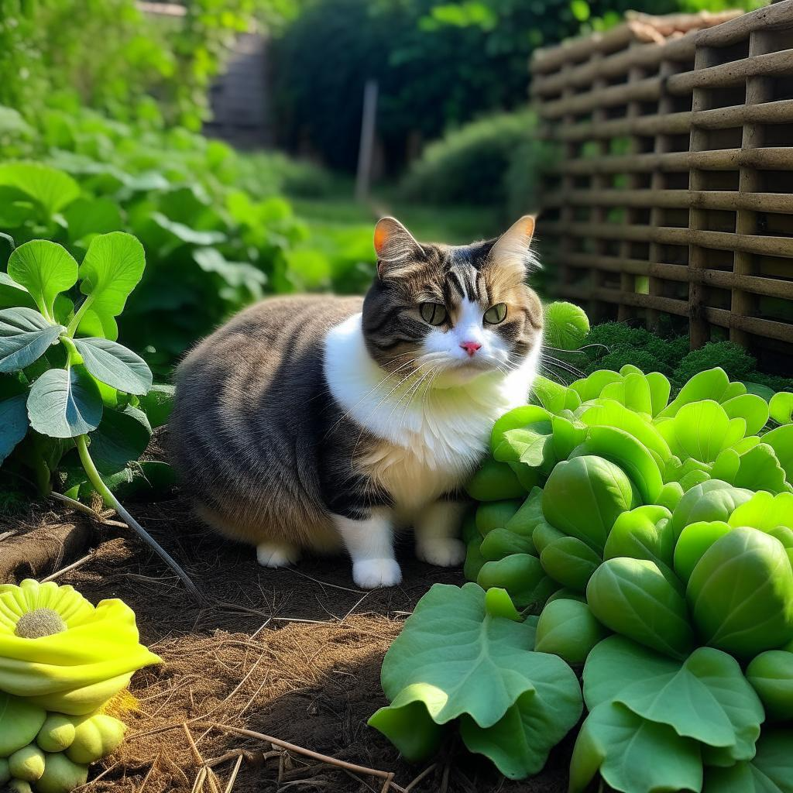

Домовенок Кузька и Бабёныш-Ягёныш. Продолжение 2.
Татьяна Александрова
Очень вредно мучить кошку
А Матвейка не успокаивается. Не получилось с коровой — значит, корова виновата. Несознательная попалась. И вообще, коровы дрессировке плохо поддаются. Кто это, скажите, видел корову в цирке или на поводке у сыщика? Вот если бы собака молоко давала или кошка…
— А чем у вас кошка занимается? — строго спросил он у Лидочки.
— Гостей намывает, солнечных зайчиков ловит, сметану ворует, за хвостом своим бегает, — перечисляет девочка.
— Понятно, — вздыхает Матвейка, — развели тут дармоедов. В Антарктиде такого ни за что не потерпели бы. Будем вашу бесполезную кошку переделывать.
— В кого? — пугается Лидочка.
— В полезную кошку. Вместо сметаны пусть ворует, например… например… например… гусениц! Вон у вас их сколько на капусте сидит! А я слышал, они вредители.
— Не будет наша Фенечка такую гадость есть, — сморщила носик Лидочка, — их даже куры без аппетита клюют.
— Вовсе не гадость. А куры ваши несознательные. Голодные путешественники за гусениц золотом платили, а они ломаются.
— А зачем путешественникам гусеницы? — зажала уши ладошками, чтобы не слышать страшного ответа, девочка.
— Да ты знаешь, что такое гусеница? Гусеница — это не только симпатичный вредитель, но и пять-шесть грамм легкоусвояемого белка. Их можно есть живьем, можно жарить на прутиках, можно запекать в глине, можно есть под майонезом.
— И что, тебя тоже в городе одними гусеницами кормили? — сглотнула Лидочка.
— Их только умирающие с голоду есть имеют право. А то на всех не хватит, — нашелся Матвейка.
Сидит Кузька на загнетке, слушает, как из его Фенечки умирающую с голоду кошку делать собираются. Решил Матвейка кошку больше не кормить, а в миску ее подкладывать только безволосых гусениц. Проголодается, съест как миленькая.
Но только и Фенечка не лыком шита. Умная кошка никогда не будет гусениц есть, пока в доме мыши не перевелись. Она же не путешественник. Принесут дети по горстке гусениц, положат в кошкину миску и за новой порцией бегут. Пока бегают, гусеницы и расползутся. Радуются ребята, думают, что кошка эту гадость ест. А Кузька бедный с ног сбился. Вредители из дома-то не уползают. Зачем им куда-то уползать, когда в избе весь подоконник цветами уставлен? И геранька тут ароматная, и фиалочки разноцветные, и алое полезный.
— Ой, мамочки, — вопит Кузька, — спасайся, кто может! Я с этим гостем жваркнусь скоро или вообще кувыкнусь. Нипочем мне этих вредителей одному из дома не выгнать!
А тут и Лидочка в дом вошла. Увидела она, что они с Матвейкой натворили, руками всплеснула. Надо же! Хотели, как лучше, а получилось совсем нехорошо. Даже хуже, чем с коровой. Помогла она домовенку вредителей с цветов снять, отнесла в темной коробочке, чтобы дорогу не запомнили, и выпустила подальше от дома.
— Если этот гость еще раз мои цветочки обидит, — кипятится Кузька, — я его на бой праведный вызову. У меня мускулы, дрын и кулаки!
— Он же как лучше хочет, — пытается оправдать братца Лидочка. — Матвейка сказал, что поселит у нас невиданный прогресс науки и техники.
— Сам приехал нежданно-негаданно, и друзей привести решил? — не успокаивается домовенок. — А если друзья у него такие же безобразники? Я с ними один не справлюсь. Ни с Матвейкой, ни с Наукой, ни с Техникой, ни с Прогрессом Невиданным.
Догрозиться Кузька не успел, потому что в избу ворвался Матвейка. Кузька быстро сделался невидимым; Матвейка, конечно, безобразник, но пугать его все-таки не следует. Кто знает, что с ребенком сделается, если он увидит Кузьку? Может, в обморок жваркнется или, как Буренка, на грядки плясать пойдет.
— Я передумал! — кричит с порога мальчик, — Нечего таких замечательных гусениц просто так кошке скармливать. Пусть она их сначала заработает. Будем выдавать поштучно в качестве поощрения.
— А за что будем выдавать поощрение? — радуется Лидочка.
— Дрессировкой займемся. Вот в Антарктиде есть такой клоун, он этих кошек дрессирует с помощью гусениц.
Кис-кис-кис!
Как ни махал руками Кузька Фенечке, как ни корчил рожи страшенные, не поняла она его. Подошла все-таки к Матвейке.
И началось. Трясет безобразник перед носом кошки противной зеленой вредительницей и командует:
— Дай лапу, лапу дай!
Кошка, конечно, понимает, что от нее требуется — кошки прекрасно понимают человеческий язык, просто виду не подают, так как это им невыгодно. Понимает, но лапу не дает. Не такая уж она и наивная! Даст ему лапу, а этот вздорный мальчишка ей в лапу эту зеленую пакость и положит.
— Раз лапу не даешь, скажи «мяу». «Мяу» скажи! Голос! А то не получишь эту аппетитную гусеницу!
«Радость-то какая, — радуется Фенечка, — ни за что мяукать не стану!»
— Ну хоть лапти принеси, — чуть не плачет Матвейка и даже, чтобы попугать немного непокорную кошку, рот открыл и гусеницу над ним держит, будто сам ее съесть хочет.
Смотрит кошка, голову наклонила: интересно ей, как этот странный человек эту гадость глотать будет. Замер домовенок на загнетке: неужели съест Матвейка вредительницу и не отравится? А мальчик взял и не съел. Видимо, только попугать хотел.
Только непонятно кого: вредительницу, Фенечку или всех остальных?
Совсем замучил парнишка кошку. Она уже и рада бы сделать все, что он хочет, только от расстройства у нее все в голове помутилось, даже язык человеческий Фенечка понимать перестала. И лапу дает, и орет, как майский кот, и лапти принести пытается, да Матвейка ее не отпускает.
— Отпусти ее, братец, — жалеет кошку Лидочка.
— Нет. Пока команды путать не перестанет, ни гусеницу не получит, ни гулять не пойдет, — разошелся юноша.
Тут уже Кузька не выдержал. Самому-то Кузьке шалить по уставу домовиному не положено: домовята должны за порядком в доме следить, а не шалить, зато других попросить можно. Прокрался Кузька потихонечку под лавку, вызвал шишигу Юльку и шепчет ей что-то на ушко.
— Шлавненько, шлавненько, — захлопала в ладошки шишига, — пошалим!
Маленькая еще шишига, все буквы не выговаривает, шепелявит.
Увлечен Матвейка дрессировкой и не видит, как маленькая шишига клубочек бабушки Настасьи из корзины достала и катает его вокруг мальчика. Шишиги — великие мастерицы чего-нибудь путать. Часто за это кошкам попадает, а напрасно. Нет ничего прекраснее для шишиги, чем запутать волосы у сонных девочек, чем завязать морским узлом все нитки в шкатулке у мамы, чем плести косички на бахроме скатерти. А уж при виде бабушкиной пряжи у них вообще слюнки текут и ладошки чешутся.
Быстро, незаметно шныряет шишига Юлька в ногах у Матвейки, распутывает бабушкин клубочек и песенку себе под нос бормочет. Тихо так бормочет, чтобы другие шишиги слышали, а мальчик не услыхал.
Тот, кто Фенечку обидит,
Света белого не взвидит.
Юльке на тропе войны
И Матвейки не страшны!
А тут как раз мальчик к баночке с червяками и гусеницами потянулся. Хотел шаг в сторону сделать — а ноги-то связаны!
Завалился Матвейка на бок, ногами дрыгает, кричит:
— Это не по правилам! Кто разрешал меня путать? Откуда тут клубок взялся?
Хихикает в кулачок Лидочка, догадывается, чьих лапок это дело, да не признается. Помнит она, как говорил братец, что домовых и шишиг не бывает, боится, что опять смеяться над ней будет.
Барахтается на полу Матвейка, никак ноги выпутать не может, а шишига Юлька забежала к нему за спину, махнула подолом своего сарафана, пыль подняла. В поднимании пыли шишигам тоже равных нет. И пыль они поднимают особенную, от которой чихать хочется.
Бедный Матвейка уже и ногами дрыгать перестал. Лежит, глаза зажмурил, чихает, остановиться не может. А шишига Юлька уже до червяков и гусениц добралась. Бегает с баночкой вокруг мальчишки, одну гусеницу ему за шиворот подсунет, другую на живот посадит, третью на пятку голую пристроит. Матвейка чихает, вредители его щекочут, пряжа подняться не дает, а под лавкой Кузька и шишиги все на полу лежат, не хуже Матвейки ногами дрыгают. Только уже от смеха, а не от щекотки.
— Ох и молодец же я! Ну просто золото самоварное, а не домовой, — не нахвалится на себя Кузька, — такую шишигу талантливую воспитал!
— Рада штараться, — радуется похвале шишига Юлька.
Юлька и правда самая замечательная шишига из всех, что знает Кузька. Ее фотография даже на доске почета шишиг висит. И с задачей своей она справилась прекрасно: пока Матвейка чихал да из пряжи выпутывался, кошка Фенечка спокойно выскользнула себе в дверь.
Продолжение следует